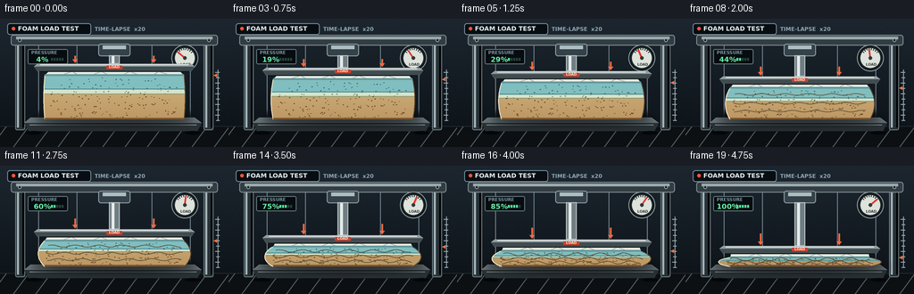
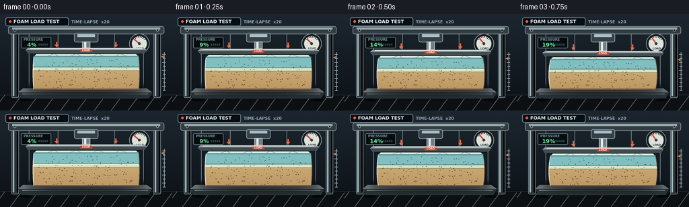

CODING AGENTS AS PIXEL WORLD MODELS
traex/GPT-5.6-Sol · mechanics_0021
点击播放 · 原生 RGB 像素
逐轮保存的候选
回放视频、检查图与代码变化。
每份候选均可单独播放。实际图片检查记录在下方工具轨迹中。
候选 01播放与检查图
点击播放 · 原生 RGB 像素


展开代码变化
--- 上一保存版本
+++ 本次保存版本
@@ -0,0 +1,267 @@
+from pathlib import Path
+import math
+import numpy as np
+from PIL import Image, ImageDraw, ImageFont, ImageFilter
+import artifact_io
+
+# Fixed deterministic, supersampled procedural renderer.
+W, H, N = 256, 144, 20
+SS = 4
+RW, RH = W * SS, H * SS
+ROOT = Path(__file__).resolve().parent
+rng = np.random.default_rng(2107)
+
+
+def font(size, bold=False):
+ name = "DejaVuSans-Bold.ttf" if bold else "DejaVuSans.ttf"
+ return ImageFont.truetype(f"/usr/share/fonts/truetype/dejavu/{name}", size * SS)
+
+
+def pts(seq):
+ return [(round(x * SS), round(y * SS)) for x, y in seq]
+
+
+def box(b):
+ return tuple(round(v * SS) for v in b)
+
+# Stable speckles in the exposed foam and stable fine industrial-grain noise.
+pores = [(rng.uniform(-0.94, 0.94), rng.uniform(0.05, 0.96),
+ rng.uniform(0.35, 0.85), rng.uniform(0.22, 0.55)) for _ in range(165)]
+noise = rng.normal(0, 1.7, (RH, RW, 1))
+
+
+def gradient_rgba(size, top, bottom, alpha=255):
+ w, h = size
+ a = np.empty((h, w, 4), dtype=np.uint8)
+ q = np.linspace(0, 1, h)[:, None]
+ for k in range(3):
+ a[:, :, k] = np.clip(top[k] * (1-q) + bottom[k] * q, 0, 255)
+ a[:, :, 3] = alpha
+ return Image.fromarray(a, "RGBA")
+
+
+def front_boundary(y, y0, y1, c):
+ v = np.clip((y-y0) / max(1e-5, y1-y0), 0, 1)
+ bulge = (1.2 + 12.0*c) * math.sin(math.pi*v) ** 0.78
+ # Mattress begins near x=50..206, then pressure squeezes it outward.
+ return 50 - bulge, 206 + bulge
+
+
+def front_band_polygon(ya, yb, y0, y1, c, samples=20):
+ ys = np.linspace(ya, yb, samples)
+ left = [(front_boundary(float(y), y0, y1, c)[0], float(y)) for y in ys]
+ right = [(front_boundary(float(y), y0, y1, c)[1], float(y)) for y in ys[::-1]]
+ return left + right
+
+
+def render_frame(i):
+ t = i / (N - 1)
+ # Compression accelerates slightly, as in a load-ramp timelapse.
+ c = t ** 1.18
+ y_top = 58.5 + 39.5 * c
+ front_top = y_top + 5.0
+ bottom = 113.0
+ thickness = bottom - front_top
+
+ # Cool industrial laboratory background.
+ yy = np.linspace(0, 1, RH)[:, None, None]
+ topc = np.array([29, 38, 47])[None, None, :]
+ botc = np.array([11, 17, 22])[None, None, :]
+ arr = topc * (1-yy) + botc * yy + noise
+ arr = np.clip(arr, 0, 255).astype(np.uint8)
+ im = Image.fromarray(arr, "RGB").convert("RGBA")
+ d = ImageDraw.Draw(im, "RGBA")
+
+ # Background wall panels and floor.
+ d.line(pts([(0, 121), (256, 121)]), fill=(85, 101, 110, 90), width=SS)
+ for x in (43, 86, 170, 213):
+ d.line(pts([(x, 18), (x, 120)]), fill=(112, 130, 140, 19), width=SS)
+ d.polygon(pts([(0,121),(256,121),(256,144),(0,144)]), fill=(12,16,19,255))
+ for x in range(-10, 270, 25):
+ d.line(pts([(x,144),(x+17,121)]), fill=(81,91,93,25), width=SS)
+
+ # Headline strip: makes the test/timelapse context unambiguous but unobtrusive.
+ d.rounded_rectangle(box((8,5,102,18)), radius=3*SS,
+ fill=(7,13,18,205), outline=(115,138,151,95), width=SS)
+ d.ellipse(box((13,9,17,13)), fill=(246,84,55,255))
+ d.text((20*SS, 7*SS), "FOAM LOAD TEST", font=font(7, True), fill=(226,238,242,255))
+ d.text((106*SS, 8*SS), "TIME-LAPSE x20", font=font(6, True), fill=(143,166,177,220))
+
+ # Heavy press frame, all behind the sample.
+ # legs / columns and cast shadows
+ for x0, x1 in ((17,28),(228,239)):
+ d.rounded_rectangle(box((x0,21,x1,125)), radius=2*SS,
+ fill=(40,50,57,255), outline=(108,124,130,255), width=SS)
+ d.rectangle(box((x0+2,24,x0+4,122)), fill=(165,181,184,45))
+ d.rectangle(box((x1-3,25,x1-1,122)), fill=(0,0,0,80))
+ d.rounded_rectangle(box((12,18,244,30)), radius=3*SS,
+ fill=(50,61,67,255), outline=(127,142,147,255), width=SS)
+ d.rectangle(box((18,20,238,23)), fill=(154,169,172,46))
+ for x in (22,234):
+ d.ellipse(box((x-2,22,x+2,26)), fill=(16,22,25,255), outline=(146,159,162,180), width=SS)
+
+ # Digital load monitor, increasing every frame.
+ d.rounded_rectangle(box((31,34,76,51)), radius=2*SS,
+ fill=(6,12,15,245), outline=(100,119,126,220), width=SS)
+ d.text((35*SS, 35*SS), "PRESSURE", font=font(5, True), fill=(129,153,162,255))
+ pct = round(4 + 96*t)
+ d.text((35*SS, 41*SS), f"{pct:3d}%", font=font(8, True), fill=(104,239,167,255))
+ for k in range(5):
+ col = (85,227,155,245) if t >= (k+1)/5 else (39,66,61,220)
+ d.rectangle(box((57+k*3,44,59+k*3,47)), fill=col)
+
+ # Analog gauge with a rising needle.
+ gx, gy, gr = 207, 44, 14
+ d.ellipse(box((gx-gr-1,gy-gr-1,gx+gr+1,gy+gr+1)), fill=(18,25,29,255),
+ outline=(139,155,159,255), width=SS)
+ d.ellipse(box((gx-gr+2,gy-gr+2,gx+gr-2,gy+gr-2)), fill=(221,226,218,255),
+ outline=(38,48,51,255), width=SS)
+ for k in range(8):
+ ang = math.radians(220 + k*(100/7))
+ a = (gx + math.cos(ang)*(gr-5), gy + math.sin(ang)*(gr-5))
+ b = (gx + math.cos(ang)*(gr-2), gy + math.sin(ang)*(gr-2))
+ d.line(pts([a,b]), fill=(40,49,49,255), width=SS)
+ ang = math.radians(220 + 100*t)
+ needle = (gx + math.cos(ang)*(gr-4), gy + math.sin(ang)*(gr-4))
+ d.line(pts([(gx,gy),needle]), fill=(226,57,46,255), width=2*SS)
+ d.ellipse(box((gx-2,gy-2,gx+2,gy+2)), fill=(52,56,55,255))
+ d.text(((gx-5)*SS,(gy+5)*SS), "LOAD", font=font(4,True), fill=(48,54,53,255))
+
+ # Hydraulic cylinder and bright polished piston.
+ d.rounded_rectangle(box((110,28,146,42)), radius=3*SS,
+ fill=(53,65,72,255), outline=(143,159,165,255), width=SS)
+ d.rectangle(box((115,30,141,34)), fill=(173,190,194,52))
+ # piston length grows smoothly down to the platen
+ d.rectangle(box((122,41,134,y_top-8)), fill=(112,126,131,255), outline=(188,199,200,255), width=SS)
+ d.rectangle(box((125,42,128,y_top-8)), fill=(229,236,235,115))
+
+ # Increasing-force arrows, visibly pointing downward.
+ arrow_alpha = int(105 + 150*t)
+ arrow_len = 7 + 5*t
+ for ax in (84,172):
+ ay2 = y_top - 10
+ ay1 = ay2 - arrow_len
+ d.line(pts([(ax,ay1),(ax,ay2)]), fill=(244,105,65,arrow_alpha), width=2*SS)
+ d.polygon(pts([(ax-3,ay2-3),(ax,ay2+1),(ax+3,ay2-3)]), fill=(244,105,65,arrow_alpha))
+
+ # Receiving anvil / base with top perspective, before mattress.
+ d.polygon(pts([(34,111),(218,111),(226,117),(27,117)]), fill=(101,113,117,255),
+ outline=(173,184,185,255))
+ d.polygon(pts([(27,117),(226,117),(221,126),(32,126)]), fill=(41,49,53,255))
+ d.line(pts([(33,119),(220,119)]), fill=(138,150,153,100), width=SS)
+ d.ellipse(box((29,126,47,130)), fill=(4,7,9,160))
+ d.ellipse(box((207,126,225,130)), fill=(4,7,9,160))
+
+ # Soft contact shadow follows and widens with deformation.
+ shadow = Image.new("RGBA", (RW,RH), (0,0,0,0))
+ sd = ImageDraw.Draw(shadow, "RGBA")
+ sd.ellipse(box((39-8*c,106,217+8*c,120)), fill=(0,0,0,155))
+ shadow = shadow.filter(ImageFilter.GaussianBlur(4*SS))
+ im.alpha_composite(shadow)
+ d = ImageDraw.Draw(im, "RGBA")
+
+ # Front body silhouette used as a clip mask for rich layered foam gradients.
+ silhouette = front_band_polygon(front_top, bottom, front_top, bottom, c, 35)
+ mask = Image.new("L", (RW,RH), 0)
+ ImageDraw.Draw(mask).polygon(pts(silhouette), fill=255)
+
+ # Warm support foam base.
+ foam_grad = gradient_rgba((RW,RH), (239,218,170), (174,133,79), 255)
+ im.alpha_composite(Image.composite(foam_grad, Image.new("RGBA",(RW,RH)), mask))
+ d = ImageDraw.Draw(im, "RGBA")
+
+ # Memory foam upper layer and intermediate transition layer.
+ mem_end = front_top + thickness*0.31
+ trans_end = front_top + thickness*0.42
+ d.polygon(pts(front_band_polygon(front_top, mem_end, front_top, bottom, c)),
+ fill=(128,190,192,255))
+ d.polygon(pts(front_band_polygon(mem_end, trans_end, front_top, bottom, c)),
+ fill=(213,228,203,255))
+ d.line(pts([(front_boundary(mem_end,front_top,bottom,c)[0],mem_end),
+ (front_boundary(mem_end,front_top,bottom,c)[1],mem_end)]),
+ fill=(75,137,143,170), width=SS)
+ d.line(pts([(front_boundary(trans_end,front_top,bottom,c)[0],trans_end),
+ (front_boundary(trans_end,front_top,bottom,c)[1],trans_end)]),
+ fill=(145,155,116,150), width=SS)
+
+ # Foam pores map with the deforming body, flattening vertically under load.
+ half_nom = 77
+ for u,v,rx,ry in pores:
+ py = front_top + v*thickness
+ lx, rx_bound = front_boundary(py, front_top, bottom, c)
+ px = (lx+rx_bound)/2 + u*(rx_bound-lx)*0.48
+ prx = rx*(1+0.45*c)
+ pry = max(0.16, ry*(0.55+0.45*(thickness/50)))
+ if v < .31:
+ col = (45,103,109,42)
+ elif v < .42:
+ col = (108,127,99,40)
+ else:
+ col = (106,72,39,48)
+ d.ellipse(box((px-prx,py-pry,px+prx,py+pry)), fill=col)
+
+ # Lower edge piping and side boundary highlights communicate mattress construction.
+ left_outline = [front_boundary(y,front_top,bottom,c)[:1] + (y,) for y in np.linspace(front_top,bottom,30)]
+ right_outline = [(front_boundary(y,front_top,bottom,c)[1],y) for y in np.linspace(front_top,bottom,30)]
+ d.line(pts(left_outline), fill=(246,232,198,190), width=SS)
+ d.line(pts(right_outline), fill=(91,70,44,150), width=SS)
+ bl, br = front_boundary(bottom,front_top,bottom,c)
+ d.line(pts([(bl,bottom-1),(br,bottom-1)]), fill=(119,83,47,180), width=2*SS)
+
+ # Quilted white mattress top, a shallow perspective face beneath the platen.
+ top_left_back, top_right_back = 55-4*c, 201+4*c
+ top_left_front, top_right_front = front_boundary(front_top,front_top,bottom,c)
+ top_poly = [(top_left_back,y_top),(top_right_back,y_top),
+ (top_right_front,front_top),(top_left_front,front_top)]
+ d.polygon(pts(top_poly), fill=(231,235,224,255), outline=(127,155,153,255))
+ # Diamond quilting squeezed with mattress; clipped visually to the trapezoid.
+ for frac in (0.18,0.40,0.62,0.84):
+ xb = top_left_back + (top_right_back-top_left_back)*frac
+ xf = top_left_front + (top_right_front-top_left_front)*min(1,frac+0.06)
+ d.line(pts([(xb,y_top+0.5),(xf,front_top-0.3)]), fill=(164,181,177,125), width=SS)
+ xf2 = top_left_front + (top_right_front-top_left_front)*max(0,frac-0.06)
+ d.line(pts([(xb,y_top+0.5),(xf2,front_top-0.3)]), fill=(164,181,177,85), width=SS)
+ d.line(pts([(top_left_front,front_top-0.5),(top_right_front,front_top-0.5)]),
+ fill=(100,151,155,230), width=2*SS)
+
+ # Increasing compression wrinkles across the face at high load.
+ if c > .28:
+ wr_alpha = int(35 + 95*c)
+ for q in (0.20,0.48,0.73):
+ wy = front_top + thickness*q
+ lx,rxv = front_boundary(wy,front_top,bottom,c)
+ amp = 0.5 + 1.4*c
+ wave = []
+ for xx in np.linspace(lx+9,rxv-9,42):
+ wave.append((xx, wy + math.sin((xx-lx)*0.24 + q*8)*amp))
+ d.line(pts(wave), fill=(100,82,57,wr_alpha), width=SS)
+
+ # Steel compression platen drawn last: it firmly contacts and occludes the top.
+ plate_y0, plate_y1 = y_top-8, y_top+0.6
+ d.polygon(pts([(42,plate_y0),(214,plate_y0),(218,plate_y0+3),(38,plate_y0+3)]),
+ fill=(145,157,159,255), outline=(202,211,210,255))
+ d.polygon(pts([(38,plate_y0+3),(218,plate_y0+3),(214,plate_y1),(42,plate_y1)]),
+ fill=(65,76,80,255), outline=(129,143,147,255))
+ d.line(pts([(45,plate_y0+1),(211,plate_y0+1)]), fill=(230,236,234,125), width=SS)
+ d.line(pts([(44,plate_y1),(212,plate_y1)]), fill=(15,21,23,180), width=SS)
+
+ # Slight red safety sticker on platen, stationary in its local frame.
+ d.rounded_rectangle(box((119,plate_y0+2,137,plate_y0+6)), radius=SS,
+ fill=(198,66,48,230))
+ d.text((122*SS,(plate_y0+1.3)*SS), "LOAD", font=font(4,True), fill=(255,232,211,255))
+
+ # Measurement ruler at the right indicates steadily reducing thickness.
+ d.line(pts([(244,57),(244,114)]), fill=(148,164,169,140), width=SS)
+ for y in range(60,115,6):
+ d.line(pts([(241 if y%12==0 else 242,y),(246,y)]), fill=(151,169,174,160), width=SS)
+ marker_y = front_top
+ d.polygon(pts([(239,marker_y),(243,marker_y-2),(243,marker_y+2)]), fill=(247,117,67,255))
+
+ # Downsample for clean antialiased geometry.
+ im = im.convert("RGB").resize((W,H), Image.Resampling.LANCZOS)
+ return np.asarray(im, dtype=np.uint8)
+
+
+frames = np.stack([render_frame(i) for i in range(N)], axis=0)
+artifact_io.save(frames, ROOT)
+print(f"saved {frames.shape} {frames.dtype}; mean={frames.mean():.2f}; range={frames.min()}..{frames.max()}")
可观测工具轨迹
实际执行的命令与返回图片。
命令 1exit 0
/bin/bash -lc "cat prompt.txt && printf '\\n--- GENERATION_RULES.md ---\\n' && cat GENERATION_RULES.md"
命令 2exit 0
/bin/bash -lc "printf '%s\\n' '--- task_spec.json ---' && cat task_spec.json && printf '%s\\n' '--- files ---' && find . -maxdepth 2 -type f -printf '%p\\n' | sort"
命令 3exit 0
/bin/bash -lc "command -v ffmpeg || true; command -v python3 || true; python3 - <<'PY' mods=['numpy','PIL','cv2','imageio','scipy','cairo'] for m in mods: try: mod=__import__(m) print(m,'OK',getattr(mod,'__version__','')) except Exception as e: print(m,'NO',e) PY"
命令 4exit 0
/bin/bash -lc 'cat artifact_io.py'
命令 5exit 0
/bin/bash -lc "cat > generate.py <<'PY'
from pathlib import Path
import math
import numpy as np
from PIL import Image, ImageDraw, ImageFont, ImageFilter
import artifact_io
# Fixed deterministic, supersampled procedural renderer.
W, H, N = 256, 144, 20
SS = 4
RW, RH = W * SS, H * SS
ROOT = Path(__file__).resolve().parent
rng = np.random.default_rng(2107)
def font(size, bold=False):
name = \"DejaVuSans-Bold.ttf\" if bold else \"DejaVuSans.ttf\"
return ImageFont.truetype(f\"/usr/share/fonts/truetype/dejavu/{name}\", size * SS)
def pts(seq):
return [(round(x * SS), round(y * SS)) for x, y in seq]
def box(b):
return tuple(round(v * SS) for v in b)
# Stable speckles in the exposed foam and stable fine industrial-grain noise.
pores = [(rng.uniform(-0.94, 0.94), rng.uniform(0.05, 0.96),
rng.uniform(0.35, 0.85), rng.uniform(0.22, 0.55)) for _ in range(165)]
noise = rng.normal(0, 1.7, (RH, RW, 1))
def gradient_rgba(size, top, bottom, alpha=255):
w, h = size
a = np.empty((h, w, 4), dtype=np.uint8)
q = np.linspace(0, 1, h)[:, None]
for k in range(3):
a[:, :, k] = np.clip(top[k] * (1-q) + bottom[k] * q, 0, 255)
a[:, :, 3] = alpha
return Image.fromarray(a, \"RGBA\")
def front_boundary(y, y0, y1, c):
v = np.clip((y-y0) / max(1e-5, y1-y0), 0, 1)
bulge = (1.2 + 12.0*c) * math.sin(math.pi*v) ** 0.78
# Mattress begins near x=50..206, then pressure squeezes it outward.
return 50 - bulge, 206 + bulge
def front_band_polygon(ya, yb, y0, y1, c, samples=20):
ys = np.linspace(ya, yb, samples)
left = [(front_boundary(float(y), y0, y1, c)[0], float(y)) for y in ys]
right = [(front_boundary(float(y), y0, y1, c)[1], float(y)) for y in ys[::-1]]
return left + right
def render_frame(i):
t = i / (N - 1)
# Compression accelerates slightly, as in a load-ramp timelapse.
c = t ** 1.18
y_top = 58.5 + 39.5 * c
front_top = y_top + 5.0
bottom = 113.0
thickness = bottom - front_top
# Cool industrial laboratory background.
yy = np.linspace(0, 1, RH)[:, None, None]
topc = np.array([29, 38, 47])[None, None, :]
botc = np.array([11, 17, 22])[None, None, :]
arr = topc * (1-yy) + botc * yy + noise
arr = np.clip(arr, 0, 255).astype(np.uint8)
im = Image.fromarray(arr, \"RGB\").convert(\"RGBA\")
d = ImageDraw.Draw(im, \"RGBA\")
# Background wall panels and floor.
d.line(pts([(0, 121), (256, 121)]), fill=(85, 101, 110, 90), width=SS)
for x in (43, 86, 170, 213):
d.line(pts([(x, 18), (x, 120)]), fill=(112, 130, 140, 19), width=SS)
d.polygon(pts([(0,121),(256,121),(256,144),(0,144)]), fill=(12,16,19,255))
for x in range(-10, 270, 25):
d.line(pts([(x,144),(x+17,121)]), fill=(81,91,93,25), width=SS)
# Headline strip: makes the test/timelapse context unambiguous but unobtrusive.
d.rounded_rectangle(box((8,5,102,18)), radius=3*SS,
fill=(7,13,18,205), outline=(115,138,151,95), width=SS)
d.ellipse(box((13,9,17,13)), fill=(246,84,55,255))
d.text((20*SS, 7*SS), \"FOAM LOAD TEST\", font=font(7, True), fill=(226,238,242,255))
d.text((106*SS, 8*SS), \"TIME-LAPSE x20\", font=font(6, True), fill=(143,166,177,220))
# Heavy press frame, all behind the sample.
# legs / columns and cast shadows
for x0, x1 in ((17,28),(228,239)):
d.rounded_rectangle(box((x0,21,x1,125)), radius=2*SS,
fill=(40,50,57,255), outline=(108,124,130,255), width=SS)
d.rectangle(box((x0+2,24,x0+4,122)), fill=(165,181,184,45))
d.rectangle(box((x1-3,25,x1-1,122)), fill=(0,0,0,80))
d.rounded_rectangle(box((12,18,244,30)), radius=3*SS,
fill=(50,61,67,255), outline=(127,142,147,255), width=SS)
d.rectangle(box((18,20,238,23)), fill=(154,169,172,46))
for x in (22,234):
d.ellipse(box((x-2,22,x+2,26)), fill=(16,22,25,255), outline=(146,159,162,180), width=SS)
# Digital load monitor, increasing every frame.
d.rounded_rectangle(box((31,34,76,51)), radius=2*SS,
fill=(6,12,15,245), outline=(100,119,126,220), width=SS)
d.text((35*SS, 35*SS), \"PRESSURE\", font=font(5, True), fill=(129,153,162,255))
pct = round(4 + 96*t)
d.text((35*SS, 41*SS), f\"{pct:3d}%\", font=font(8, True), fill=(104,239,167,255))
for k in range(5):
col = (85,227,155,245) if t >= (k+1)/5 else (39,66,61,220)
d.rectangle(box((57+k*3,44,59+k*3,47)), fill=col)
# Analog gauge with a rising needle.
gx, gy, gr = 207, 44, 14
d.ellipse(box((gx-gr-1,gy-gr-1,gx+gr+1,gy+gr+1)), fill=(18,25,29,255),
outline=(139,155,159,255), width=SS)
d.ellipse(box((gx-gr+2,gy-gr+2,gx+gr-2,gy+gr-2)), fill=(221,226,218,255),
outline=(38,48,51,255), width=SS)
for k in range(8):
ang = math.radians(220 + k*(100/7))
a = (gx + math.cos(ang)*(gr-5), gy + math.sin(ang)*(gr-5))
b = (gx + math.cos(ang)*(gr-2), gy + math.sin(ang)*(gr-2))
d.line(pts([a,b]), fill=(40,49,49,255), width=SS)
ang = math.radians(220 + 100*t)
needle = (gx + math.cos(ang)*(gr-4), gy + math.sin(ang)*(gr-4))
d.line(pts([(gx,gy),needle]), fill=(226,57,46,255), width=2*SS)
d.ellipse(box((gx-2,gy-2,gx+2,gy+2)), fill=(52,56,55,255))
d.text(((gx-5)*SS,(gy+5)*SS), \"LOAD\", font=font(4,True), fill=(48,54,53,255))
# Hydraulic cylinder and bright polished piston.
d.rounded_rectangle(box((110,28,146,42)), radius=3*SS,
fill=(53,65,72,255), outline=(143,159,165,255), width=SS)
d.rectangle(box((115,30,141,34)), fill=(173,190,194,52))
# piston length grows smoothly down to the platen
d.rectangle(box((122,41,134,y_top-8)), fill=(112,126,131,255), outline=(188,199,200,255), width=SS)
d.rectangle(box((125,42,128,y_top-8)), fill=(229,236,235,115))
# Increasing-force arrows, visibly pointing downward.
arrow_alpha = int(105 + 150*t)
arrow_len = 7 + 5*t
for ax in (84,172):
ay2 = y_top - 10
ay1 = ay2 - arrow_len
d.line(pts([(ax,ay1),(ax,ay2)]), fill=(244,105,65,arrow_alpha), width=2*SS)
d.polygon(pts([(ax-3,ay2-3),(ax,ay2+1),(ax+3,ay2-3)]), fill=(244,105,65,arrow_alpha))
# Receiving anvil / base with top perspective, before mattress.
d.polygon(pts([(34,111),(218,111),(226,117),(27,117)]), fill=(101,113,117,255),
outline=(173,184,185,255))
d.polygon(pts([(27,117),(226,117),(221,126),(32,126)]), fill=(41,49,53,255))
d.line(pts([(33,119),(220,119)]), fill=(138,150,153,100), width=SS)
d.ellipse(box((29,126,47,130)), fill=(4,7,9,160))
d.ellipse(box((207,126,225,130)), fill=(4,7,9,160))
# Soft contact shadow follows and widens with deformation.
shadow = Image.new(\"RGBA\", (RW,RH), (0,0,0,0))
sd = ImageDraw.Draw(shadow, \"RGBA\")
sd.ellipse(box((39-8*c,106,217+8*c,120)), fill=(0,0,0,155))
shadow = shadow.filter(ImageFilter.GaussianBlur(4*SS))
im.alpha_composite(shadow)
d = ImageDraw.Draw(im, \"RGBA\")
# Front body silhouette used as a clip mask for rich layered foam gradients.
silhouette = front_band_polygon(front_top, bottom, front_top, bottom, c, 35)
mask = Image.new(\"L\", (RW,RH), 0)
ImageDraw.Draw(mask).polygon(pts(silhouette), fill=255)
# Warm support foam base.
foam_grad = gradient_rgba((RW,RH), (239,218,170), (174,133,79), 255)
im.alpha_composite(Image.composite(foam_grad, Image.new(\"RGBA\",(RW,RH)), mask))
d = ImageDraw.Draw(im, \"RGBA\")
# Memory foam upper layer and intermediate transition layer.
mem_end = front_top + thickness*0.31
trans_end = front_top + thickness*0.42
d.polygon(pts(front_band_polygon(front_top, mem_end, front_top, bottom, c)),
fill=(128,190,192,255))
d.polygon(pts(front_band_polygon(mem_end, trans_end, front_top, bottom, c)),
fill=(213,228,203,255))
d.line(pts([(front_boundary(mem_end,front_top,bottom,c)[0],mem_end),
(front_boundary(mem_end,front_top,bottom,c)[1],mem_end)]),
fill=(75,137,143,170), width=SS)
d.line(pts([(front_boundary(trans_end,front_top,bottom,c)[0],trans_end),
(front_boundary(trans_end,front_top,bottom,c)[1],trans_end)]),
fill=(145,155,116,150), width=SS)
# Foam pores map with the deforming body, flattening vertically under load.
half_nom = 77
for u,v,rx,ry in pores:
py = front_top + v*thickness
lx, rx_bound = front_boundary(py, front_top, bottom, c)
px = (lx+rx_bound)/2 + u*(rx_bound-lx)*0.48
prx = rx*(1+0.45*c)
pry = max(0.16, ry*(0.55+0.45*(thickness/50)))
if v < .31:
col = (45,103,109,42)
elif v < .42:
col = (108,127,99,40)
else:
col = (106,72,39,48)
d.ellipse(box((px-prx,py-pry,px+prx,py+pry)), fill=col)
# Lower edge piping and side boundary highlights communicate mattress construction.
left_outline = [front_boundary(y,front_top,bottom,c)[:1] + (y,) for y in np.linspace(front_top,bottom,30)]
right_outline = [(front_boundary(y,front_top,bottom,c)[1],y) for y in np.linspace(front_top,bottom,30)]
d.line(pts(left_outline), fill=(246,232,198,190), width=SS)
d.line(pts(right_outline), fill=(91,70,44,150), width=SS)
bl, br = front_boundary(bottom,front_top,bottom,c)
d.line(pts([(bl,bottom-1),(br,bottom-1)]), fill=(119,83,47,180), width=2*SS)
# Quilted white mattress top, a shallow perspective face beneath the platen.
top_left_back, top_right_back = 55-4*c, 201+4*c
top_left_front, top_right_front = front_boundary(front_top,front_top,bottom,c)
top_poly = [(top_left_back,y_top),(top_right_back,y_top),
(top_right_front,front_top),(top_left_front,front_top)]
d.polygon(pts(top_poly), fill=(231,235,224,255), outline=(127,155,153,255))
# Diamond quilting squeezed with mattress; clipped visually to the trapezoid.
for frac in (0.18,0.40,0.62,0.84):
xb = top_left_back + (top_right_back-top_left_back)*frac
xf = top_left_front + (top_right_front-top_left_front)*min(1,frac+0.06)
d.line(pts([(xb,y_top+0.5),(xf,front_top-0.3)]), fill=(164,181,177,125), width=SS)
xf2 = top_left_front + (top_right_front-top_left_front)*max(0,frac-0.06)
d.line(pts([(xb,y_top+0.5),(xf2,front_top-0.3)]), fill=(164,181,177,85), width=SS)
d.line(pts([(top_left_front,front_top-0.5),(top_right_front,front_top-0.5)]),
fill=(100,151,155,230), width=2*SS)
# Increasing compression wrinkles across the face at high load.
if c > .28:
wr_alpha = int(35 + 95*c)
for q in (0.20,0.48,0.73):
wy = front_top + thickness*q
lx,rxv = front_boundary(wy,front_top,bottom,c)
amp = 0.5 + 1.4*c
wave = []
for xx in np.linspace(lx+9,rxv-9,42):
wave.append((xx, wy + math.sin((xx-lx)*0.24 + q*8)*amp))
d.line(pts(wave), fill=(100,82,57,wr_alpha), width=SS)
# Steel compression platen drawn last: it firmly contacts and occludes the top.
plate_y0, plate_y1 = y_top-8, y_top+0.6
d.polygon(pts([(42,plate_y0),(214,plate_y0),(218,plate_y0+3),(38,plate_y0+3)]),
fill=(145,157,159,255), outline=(202,211,210,255))
d.polygon(pts([(38,plate_y0+3),(218,plate_y0+3),(214,plate_y1),(42,plate_y1)]),
fill=(65,76,80,255), outline=(129,143,147,255))
d.line(pts([(45,plate_y0+1),(211,plate_y0+1)]), fill=(230,236,234,125), width=SS)
d.line(pts([(44,plate_y1),(212,plate_y1)]), fill=(15,21,23,180), width=SS)
# Slight red safety sticker on platen, stationary in its local frame.
d.rounded_rectangle(box((119,plate_y0+2,137,plate_y0+6)), radius=SS,
fill=(198,66,48,230))
d.text((122*SS,(plate_y0+1.3)*SS), \"LOAD\", font=font(4,True), fill=(255,232,211,255))
# Measurement ruler at the right indicates steadily reducing thickness.
d.line(pts([(244,57),(244,114)]), fill=(148,164,169,140), width=SS)
for y in range(60,115,6):
d.line(pts([(241 if y%12==0 else 242,y),(246,y)]), fill=(151,169,174,160), width=SS)
marker_y = front_top
d.polygon(pts([(239,marker_y),(243,marker_y-2),(243,marker_y+2)]), fill=(247,117,67,255))
# Downsample for clean antialiased geometry.
im = im.convert(\"RGB\").resize((W,H), Image.Resampling.LANCZOS)
return np.asarray(im, dtype=np.uint8)
frames = np.stack([render_frame(i) for i in range(N)], axis=0)
artifact_io.save(frames, ROOT)
print(f\"saved {frames.shape} {frames.dtype}; mean={frames.mean():.2f}; range={frames.min()}..{frames.max()}\")
PY
python3 generate.py
ls -lh pixels.npz inspection.png transition_check.png index.html frames/00.png frames/19.png"命令 6exit 0
/bin/bash -lc "python3 - <<'PY'
from pathlib import Path
import json, numpy as np
from PIL import Image
spec=json.loads(Path('task_spec.json').read_text())
fs=[]
for i in range(spec['frames']):
p=Path('frames')/f'{i:02d}.png'
assert p.exists(), p
a=np.asarray(Image.open(p).convert('RGB'))
assert a.shape==(spec['height'],spec['width'],3),a.shape
assert a.dtype==np.uint8
fs.append(a)
f=np.stack(fs)
assert len({x.tobytes() for x in f})==spec['frames']
mean_abs=np.abs(f[1:].astype(np.int16)-f[:-1].astype(np.int16)).mean((1,2,3))
changed=(f[1:]"'!=f[:-1]).any(3).mean((1,2))
p=np.load('"'pixels.npz')['pixels']
assert p.shape==(spec['height'],spec['width'],spec['frames'])
assert Path('index.html').stat().st_size>100000
print('VALID',f.shape,f.dtype)
print('frame-to-frame MAD:',np.round(mean_abs,2).tolist())
print('changed-pixel fraction:',np.round(changed,3).tolist())
print('brightness first/mid/last:',*[round(f[k].mean(),2) for k in (0,10,19)])
print('artifacts:',[(x.name,x.stat().st_size) for x in map(Path,['pixels.npz','index.html','inspection.png','transition_check.png'])])
PY
python3 -m py_compile generate.py artifact_io.py
git status --short"保存候选 1 份；完成命令 6 次；可验证图片返回 0 张。原始 API 响应与完整日志保留在本地。